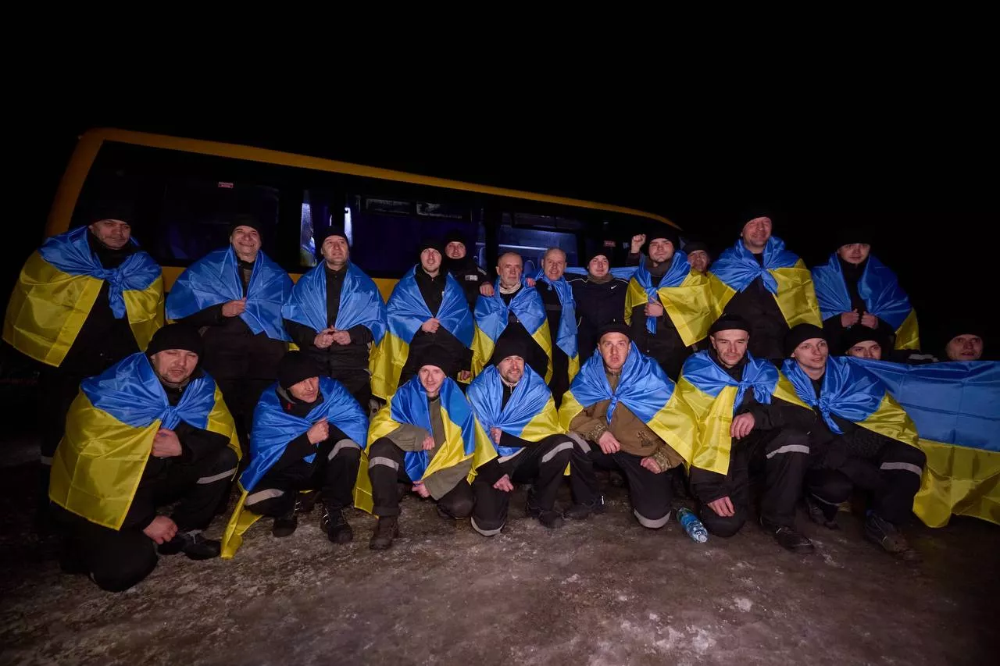

Україна повернула ще 100 полонених військових
«Усі — наші, усі — знову на рідній землі. Працюємо щодо кожного й кожної та не зупинимося, поки всіх не повернемо! Наша команда, яка займається обмінами, — дякую за потрібний країні результат!», — прокоментував Зеленський.

У Києві вулицю Булгакова перейменували на Кікабідзе, а бібліотеку Блока назвали на честь Юри
«У багатовіковому Києві не має залишитись найменувань, які пов’язані з країною-агресором, її радянським та імперським минулим», — наголосив заступник міського голови — секретар Київради Володимир Бондаренко.
Так, у Солом’янському районі проспект Повітрофлотський став проспектом Повітряних Сил. Цьому передувала довга дискусія.
Вулицю Білгородську в тому ж районі назвали на честь Василя Овсієнка — політв’язня радянських таборів, дисидента і члена правозахисної Української Гельсінської Групи.
У Деснянському районі не буде більше вулиці на честь радянського військового і державного діяча Миколи Матеюка. Натомість вулиця носитиме назву на честь українського економіста, науковці та громадського діяча Василя Іваниса. Він був родом із Кубані, а помер в еміграції у Канаді.
П’ятеро американських морпіхів загинули в аварії гелікоптера
П’ятеро морських піхотинців армії США загинули внаслідок аварії гелікоптера у Південній Каліфорнії. Вертоліт розбився через сильні пориви вітру.
«Ці пілоти і члени екіпажу служили покликанню, яке було вищим за них самих, і пишалися цим. Ми завжди будемо вдячні за їхній поклик до обов'язку і самовіддану службу», — заявив генерал-майор Майкл Боргшульте, командувач 3-го авіаційного крила морської піхоти, бійці якого загинули. Наразі триває пошук залишків тіл військових.
З ким Україна зіграє у Лізі націй: жереб визначив суперників
У Парижі, столиці Франції, відбулося жеребкування Ліги націй УЄФА 2024-2025. За його підсумками визначили суперників національної збірної України з футболу.
У дивізіонах А, В і С виступатиме по 16 збірних, а в дивізіоні D — шість команд. Україна на жеребкуванні потрапила до другого кошика Ліги В й отримала по одному супернику з першого, третього та четвертого кошиків. У групі В1 синьо-жовті зіграють із Чехією, Албанією та Грузією. Головний тренер національної збірної Сергій Ребров каже, що «нічого не очікував від жеребкування Ліги націй».
«Зараз ми очікуємо плей-оф відбору Євро-2024. Після ігор плей-оф ми будемо збирати інформацію про всі ці команди. Зараз, вважаю, повинні сконцентруватися на підготовці до березневих іспитів», — пояснив він, цитує його УАФ.
.jpg)